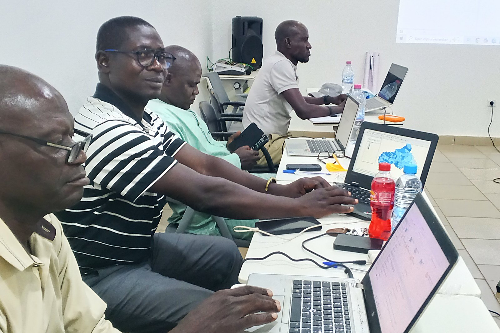

Seconde édition · Certificat professionnel · rentrée du 20 août 2026
CONDUIRE UNE ENQUÊTE DE A À Z
Maîtriser toute la chaîne d’un projet statistique — du cadrage de la commande
au rapport soutenu devant un décideur. Deux formules, en ligne et en présentiel.
Seconde édition, revue avec les retours de la première promotion.
2formules
10modules
9logiciels
3intervenants
Le contexte centrafricain
Le pays produit ses données. Il lui manque des gens pour les faire parler.
La République centrafricaine conduit son quatrième recensement général de la population,
vingt-deux ans après le précédent. Son Plan national de développement 2024-2028, doté de
7 040 milliards de FCFA, se mesure axe par axe à des indicateurs, et couvre 66 cibles des
Objectifs de développement durable. Tout cela repose sur une même compétence :
savoir concevoir une enquête, la conduire et en tirer des conclusions défendables.
2003Année du dernier recensement général achevé. Le RGPH-4 est en cours d’exécution.PND-RCA 2024-2028
68,8 %de la population en situation de pauvreté chronique — un chiffre qu’il faut savoir mesurer avant de pouvoir agir dessus.EHCVM 2021, ICASEES
50 %des chômeurs urbains ont moins de 25 ans et n’ont jamais travaillé.PND-RCA 2024-2028
84 / 108Taux brut de scolarisation des filles contre celui des garçons, en 2021. Une donnée désagrégée qui change une politique publique.PND-RCA 2024-2028
« Insuffisance de données fiables, exhaustives et désagrégées sensibles au genre
et aux personnes vivant avec un handicap. »
Plan national de développement de la République centrafricaine 2024-2028,
matrice des risques. Mesure d’atténuation retenue par le Gouvernement :
« renforcer les capacités du système statistique national, notamment des structures
en charge de la production des données statistiques ».
L’écart à combler
La demande existe. Le diplôme n’y suffit pas.
Les recruteurs des ONG, des agences des Nations unies, des instituts nationaux et des
cabinets d’études ne demandent pas si vous avez étudié la statistique. Ils demandent si
vous avez déjà conduit une enquête. Entre les deux, il y a un écart que l’université,
seule, ne comble pas — et que cette formation est faite pour combler.
Le mémoire s’enlise sur la méthode
Le sujet tient. La problématique, l’échantillon et le plan d’analyse, moins.
Un jury n’attaque presque jamais le thème : il attaque la méthode.
La dépendance à un tiers
On collecte, puis on confie les données à quelqu’un d’autre pour l’analyse.
On ne maîtrise alors ni le calendrier, ni la qualité, ni ce qui en sort.
Des logiciels, pas un métier
Savoir cliquer dans un logiciel d’analyse n’est pas savoir bâtir un plan de sondage,
former vingt enquêteurs ou défendre un taux de non-réponse devant un bailleur.
Un CV qui ne prouve rien
Aucun protocole, aucun questionnaire, aucun rapport à montrer.
À compétences déclarées égales, c’est le dossier de travaux qui départage.
« Mise à jour du cadre juridique du système statistique national, renforcer les capacités
humaines et matérielles, étendre la couverture thématique et géographique, assurer la
qualité et la régularité des publications. »
PND-RCA 2024-2028, action prioritaire de niveau élevé (H 63), axe stratégique 1 —
gouvernance et État de droit. C’est le besoin national auquel répond, à son échelle,
chaque personne formée.
La méthode
Une mission complète, pas dix cours séparés.
Vous ne suivez pas dix cours indépendants. Vous conduisez une seule étude, du premier au
dernier jour, exactement comme en mission : vous cadrez, vous concevez, vous allez sur le
terrain à Bangui, vous apurez, vous analysez, vous cartographiez, vous rédigez, vous soutenez.
Les deux formules traitent les mêmes dix modules — seul le rythme change.

Encadrement en salle — atelier conduit par le cabinet, Bangui, mai 2026.
En ligne et en présentiel
Les deux formules se suivent sur Zoom comme en salle, et l’on peut alterner d’un jour à
l’autre. Un ordinateur portable personnel est obligatoire : on n’apprend pas neuf
logiciels en regardant l’écran du voisin.
Une vraie sortie de terrain
Au cinquième module, dans un arrondissement de Bangui, avec le questionnaire que vous
avez conçu et numérisé auparavant. On n’apprend pas à gérer un refus dans une salle
de cours.
Des données centrafricaines
Les jeux de données travaillés sont nationaux : préfectures, arrondissements de Bangui,
séries de l’ICASEES. Aucun exemple importé et hors sol.
Un livrable par module
Chaque module se termine par une pièce produite et corrigée. À la fin, ces pièces
forment votre dossier de travaux — le seul argument qui pèse en entretien.
Le parcours · modules 1 à 5
Concevoir et collecter
Du premier au cinquième module : la commande devient un protocole, le protocole devient
un questionnaire, le questionnaire devient des données de terrain.
01
Cadrer la demande : du problème au protocole
Lire des termes de référence, reformuler une commande floue, poser la problématique,
les questions d’évaluation, les objectifs général et spécifiques, le cadre méthodologique
et le calendrier.
Livrable : votre note de cadrage.
02
Concevoir le questionnaire
Du concept à la variable, de la variable à la question. Formulation neutre, modalités
exhaustives et exclusives, filtres, ordre des sections, durée d’administration,
traduction et pré-test en sango, correction après pré-test.
Livrable : votre questionnaire pré-testé.
03
Construire le plan d’échantillonnage
Population cible et base de sondage, tirage aléatoire simple, stratifié, en grappes à
deux degrés. Calcul de la taille d’échantillon, marge d’erreur, effet de grappe,
pondérations et redressement. Traitement de la non-réponse.
Livrable : votre plan de sondage chiffré et justifié.
04
Numériser le questionnaire
Logique XLSForm : types de questions, listes de choix, contraintes et messages d’erreur,
conditions d’affichage, calculs, groupes et répétitions. Déploiement sur tablette et sur
téléphone, collecte hors connexion, gestion des versions du formulaire.
Livrable : votre formulaire déployé sur les appareils.
05
Organiser et superviser la collecte — sortie terrain
Recrutement et formation des enquêteurs, découpage des itinéraires, protocole
d’introduction auprès des ménages, consentement, gestion des refus, des absences et des
incidents, contrôle qualité en cours de collecte, suivi du rendement journalier.
Sortie réelle dans un arrondissement de Bangui.
Livrable : vos données collectées sur le terrain.
Le parcours · modules 6 à 10
Analyser et convaincre
Du sixième au dixième module : les données brutes deviennent une base propre, la base
devient des résultats, les résultats deviennent un rapport soutenu devant un jury.
06
Apurer, documenter, archiver, sécuriser
Contrôles de cohérence et de vraisemblance, valeurs aberrantes et manquantes, recodage
et création de variables, dictionnaire des variables, plan d’archivage et de nommage,
anonymisation et protection des données personnelles des enquêtés.
Livrable : votre base propre et documentée.
07
Analyser : les descriptions qui tiennent
Tris à plat et tris croisés, application des pondérations, indicateurs composites,
intervalles de confiance. Savoir ce qu’on a le droit de conclure d’un tableau —
et surtout ce qu’on n’a pas le droit d’en dire.
Livrable : vos tableaux d’analyse commentés.
08
Aller plus loin : tests et modèles
Comparaisons de moyennes et de proportions, tests d’indépendance, corrélation,
régression linéaire et régression logistique. Lecture des sorties, vérification des
conditions d’application, interprétation en langage de décideur.
Livrable : vos scripts d’analyse commentés.
09
Donner à voir : graphiques, cartes, tableau de bord
Règles de visualisation, choix du graphique juste, échelles honnêtes. Cartographie
thématique des préfectures et des arrondissements de Bangui : jointure entre base
d’enquête et fond de carte, discrétisation, sémiologie, export imprimable.
Tableau de bord de suivi d’indicateurs.
Livrable : votre planche de résultats et votre carte.
10
Rédiger et soutenir
Plan type d’un rapport d’étude conforme aux attentes des bailleurs, note de synthèse de
deux pages, résumé exécutif, règles de citation des sources et des limites.
Puis soutenance de dix minutes devant un jury blanc, avec questions.
Livrable : votre rapport et votre présentation soutenue.
Les outils
Neuf logiciels, chacun à sa place dans la chaîne
On n’apprend pas neuf logiciels pour la collection. Chacun intervient là où il est le
meilleur — et vous repartez en sachant lequel ouvrir devant quel problème.
KoboToolbox
Collecte mobile
La plateforme d’enquête des ONG et des agences humanitaires. Formulaire, déploiement
sur les téléphones des enquêteurs, collecte hors connexion, suivi en temps réel.
Gratuit — compte humanitaire
ODK Collect
Collecte mobile
La brique libre sur laquelle repose l’essentiel de la collecte assistée par tablette.
Même logique XLSForm, mais serveur maîtrisé de bout en bout.
Libre et gratuit
Google Forms
Collecte légère
L’outil du sondage rapide, de la pré-enquête et de la consultation interne.
Ses limites sont enseignées autant que ses usages.
Gratuit
Microsoft Excel
Apurement et calcul
Le format que tout le monde vous enverra. Tableaux croisés, formules de contrôle,
repérage des doublons, export propre vers les logiciels d’analyse.
Licence — alternative libre présentée
IBM SPSS Statistics
Analyse par menus
La référence des mémoires et des services d’études. Tris, croisements, tests,
pondération. Prise en main par menus, puis passage à la syntaxe.
Licence — version d’essai fournie
Stata
Économie et santé
L’outil des économistes et des enquêtes ménages. Gestion native des plans de sondage
complexes et des pondérations — ce que peu de logiciels font correctement.
Licence — version d’essai fournie
R et RStudio
Analyse et graphiques
Libre, sans limite de taille de fichier ni licence à renouveler. Nettoyage, analyse,
graphiques de qualité publication, rapports qui se régénèrent seuls.
Libre et gratuit
QGIS
Cartographie
Représenter un indicateur sur les préfectures, les sous-préfectures ou les
arrondissements. Jointure base-carte, discrétisation, export imprimable.
Libre et gratuit
Power BI
Tableau de bord
Passer d’un rapport figé à un tableau de bord que le décideur manipule :
filtres, séries, alertes de seuil. Le format attendu en suivi-évaluation.
Version gratuite suffisante
Les marques et noms de logiciels cités appartiennent à leurs propriétaires respectifs.
Leur mention désigne les outils enseignés pendant la formation et n’implique aucun
partenariat, parrainage ni affiliation. Les pictogrammes sont des représentations
réalisées par le cabinet.
Alignement
Une compétence alignée sur les engagements du pays
Ce qui s’apprend ici n’est pas un savoir hors sol : c’est exactement la capacité que les
cadres de développement — mondial, continental et national — désignent comme manquante.
17ODD
Objectifs de développement durable — Agenda 2030
17 objectifs, 169 cibles. Deux d’entre elles portent précisément sur ce métier :
la cible 17.18 appelle des données de qualité, actualisées et
désagrégées par sexe, âge, handicap et localisation géographique ; la cible
17.19 appelle le renforcement des capacités statistiques des
pays. Les journées 2, 3 et 6 du parcours y répondent directement.
8OMD
Objectifs du Millénaire — ce qu’ils ont appris au monde
8 objectifs, 21 cibles et 60 indicateurs, de 2000 à 2015. Leur bilan a buté partout sur
la même limite : impossible de prouver un progrès sans mesure régulière. C’est
précisément pour cela que les Objectifs de développement durable ont
multiplié par trois l’exigence de mesure — et c’est cette
exigence qui crée aujourd’hui les postes que vise cette formation.
5AXES
Plan national de développement 2024-2028
Le plan quinquennal en vigueur couvre 66 cibles ODD réparties
sur cinq axes stratégiques, et fait de la finalisation du RGPH-4 un objectif stratégique
à part entière. Son cadre de résultats se renseigne, dit le plan, « sur la base d’un
programme d’enquêtes à réaliser par l’ICASEES ». La Stratégie nationale de développement
de la statistique en organise la mise en œuvre.
Axe
Intitulé de l’axe stratégique du PND-RCA 2024-2028
Cibles ODD
1
Renforcement de la sécurité, promotion de la gouvernance et de l’État de droit
9
2
Développement du capital humain et accès équitable à des services sociaux de base de qualité
15
3
Développement des infrastructures résilientes et durables
10
4
Accélération de la production et des chaînes de valeur dans les filières productives
18
5
Durabilité environnementale et résilience face aux crises et au changement climatique
14
Intitulés et décomptes de cibles : Plan national de développement de la République
centrafricaine 2024-2028, section 2.10.1 « Alignement du PND-RCA avec les agendas
internationaux ». Ministère de l’Économie, du Plan et de la Coopération internationale.
Ce que vous emportez
À la fin, vous ne repartez pas les mains vides
La première promotion l’a fait avant vous : étude complète, soutenance devant un jury,
puis remise des attestations de réussite. La seconde édition reprend le même parcours.
Remise des attestations — Bangui, janvier 2026. Noms rendus illisibles.
Le certificat de fin de parcours, remis en séance de clôture, nominatif et daté.
Votre dossier de travaux : note de cadrage, questionnaire, plan de sondage,
base apurée et documentée, rapport d’étude et support de soutenance.
Les supports complets et les vidéos des séances, à revoir sans limite de durée.
Des jeux de données centrafricains réels, pour continuer à s’entraîner.
Vos codes d’analyse en R, en Stata et en syntaxe SPSS, commentés ligne à ligne.
Les modèles du cabinet : plan type de rapport, grille de contrôle qualité de la
collecte, canevas de note de synthèse, gabarit de convention d’enquête.
Les installateurs des neuf logiciels, posés sur votre machine avec notre
assistance dès la séance du 19 août.
Un accompagnement après la formation, par WhatsApp, sur vos propres travaux.
Un fil rouge : votre propre sujet
Les participants qui arrivent avec un sujet — mémoire en cours, évaluation à conduire,
enquête interne à lancer — travaillent dessus pendant tout le parcours. Signalez-le au
moment de l’inscription : le sujet est examiné lors de la rencontre du 19 août.
Les deux formules
Deux formules, un seul programme
Les mêmes dix modules, les mêmes intervenants, le même certificat. Ce qui change, c’est le
rythme et le public. Les deux se suivent en ligne sur Zoom ou en présentiel, et l’on
peut alterner d’un jour à l’autre.
Étudiants et doctorants
BootCamp intensif
Dates
Du 20 août au 5 septembre 2026 15 journées · 105 heures
Rythme
Du lundi au samedi, 09 h – 17 h pause de 13 h à 14 h
Où
En ligne (Zoom) et en présentiel Université de Bangui
Format
Immersif : toute la chaîne d’enquête condensée en trois semaines, pensée pour un mémoire ou une thèse en cours.
100 000FCFAau lieu de 250 000Paiement unique au démarrage
Professionnels et institutions
Cours du soir approfondi
Dates
Du 20 août au 28 octobre 2026 60 séances · 300 heures
Rythme
Du lundi au samedi, 16 h – 21 h dimanches exclus
Où
En ligne (Zoom) et en présentiel siège du cabinet, Kangala
Format
Contenu orienté compétences métiers, renforcé et prêt à l’opérationnalisation. 30 places strictes.
200 000FCFAau lieu de 300 000Paiement unique au démarrage
Cette formation est faite pour vous si
Vous préparez une licence, un master ou une thèse avec une enquête de terrain.
Vous êtes chercheur et voulez conduire vos propres collectes.
Vous êtes cadre d’une administration, d’un projet ou d’une ONG, chargé du suivi-évaluation.
Vous êtes consultant et voulez répondre seul à un appel d’offres d’étude.
Elle ne l’est pas si
Vous cherchez un diplôme d’État : ceci est un certificat professionnel de cabinet.
Vous voulez seulement apprendre un logiciel : ici on enseigne un métier.
Vous ne disposez pas d’un ordinateur portable personnel : il est obligatoire.
Vous cherchez un cours de statistique mathématique : ce n’est pas l’objet.
Intervenants et modalités
Qui vous forme, et dans quelles conditions
DN
DASSE TE NGBOKOTA Josué Honoré
Ingénieur statisticien
Spécialiste MEAL, analyste quantitatif et développeur de systèmes d’informations
décisionnelles. Conduit les modules de numérisation, d’analyse et de restitution.
ZK
ZIA KOYANGBO Arsène
Ingénieur statisticien économiste · Directeur à l’ICASEES
Seize ans d’expérience. Directeur technique de
l’EHCVM 2021 — l’enquête nationale dont cette brochure cite les chiffres — et
participant aux travaux techniques d’élaboration du PND
2024-2028. Consultant principal de la deuxième Monographie communale ; consultant
pour l’UNFPA, la Banque mondiale et Cordaid. Ingénieur statisticien économiste de
l’ISSEA (Yaoundé), ingénieur des travaux statistiques de l’ENSEA (Abidjan).
Conduit les modules de cadrage, de questionnaire et d’échantillonnage.
DM
DAVY MAKOSSO
Ingénieur statisticien
Spécialiste en traitement et analyse des données. Conduit les modules d’apurement,
de documentation et d’analyse approfondie.
Le calendrier de la rentrée
Mardi 18 août 2026
Clôture des inscriptions et rencontre avec les personnes intéressées.
Mercredi 19 août 2026
Rencontre avec les inscrits : débriefing, remise de la documentation et des fichiers de travail, installation des applications.
Jeudi 20 août 2026
Ouverture des deux formules — BootCamp le matin, Cours du soir en fin de journée.
Samedi 5 septembre 2026
Clôture du BootCamp : soutenances et remise des certificats.
Mercredi 28 octobre 2026
Clôture du Cours du soir : soutenances et remise des certificats.
Obligatoire de votre côté
Un ordinateur portable personnel. C’est la seule condition matérielle et elle
n’est pas négociable : les neuf logiciels s’installent sur votre machine dès le
19 août, avec notre assistance. Vous repartez avec un poste de travail complet.
Assuré de notre côté
Connexion Internet mise à disposition pendant les séances, assistance technique tout au
long du parcours, et pré-requis limités : savoir utiliser un ordinateur et un tableur au
niveau débutant suffit.
Inscription
Seconde édition. Clôture le 18 août.
Trente personnes suivront le Cours du soir, et la rentrée est le 20 août.
Un message sur WhatsApp suffit à réserver votre place.
Téléphone
00 236 72 72 84 42 WhatsApp et Telegram sur le même numéro
Courriel
oubanguistatc@gmail.com
En ligne
www.oubanguistatc.io
Siège
Kangala, Avenue B. Boganda 3e arrondissement, Bangui
Scannez, écrivez
Ce que vous devez faire maintenant
1. Écrivez sur WhatsApp en précisant la formule choisie et votre profil.
2. Recevez la fiche d’inscription et les coordonnées de règlement.
3. Réglez au démarrage, en une fois — votre place est bloquée et le compteur décrémenté.
Photographies : ateliers de formation conduits par le cabinet, Bangui, mai 2026.
Les données de contexte national proviennent du Plan national de développement de la
République centrafricaine 2024-2028 (Ministère de l’Économie, du Plan et de la Coopération
internationale) et des publications de l’Institut centrafricain des statistiques et des
études économiques et sociales ; elles sont citées avec leur source.
Les marques et noms de logiciels cités appartiennent à leurs propriétaires respectifs.